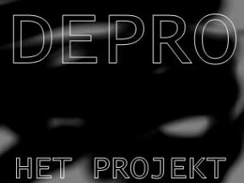

Klik op de foto's voor vergroting en info
Perfect
Dit wordt de nieuwe hoes mochten we ooit nog een album uitbrengen!
Gedichten
René schreef in de jaren tachtig niet alleen teksten voor de band maar ook gedichten. Die gaf hij in eigen beheer uit met een totale oplage van wel 30 stuks!!! De bundel was getiteld: "Herhalen nr 1" en was handgekleurd en handgeschreven. De gedichten waren zwart van toon, iets wat de tijdgeest met zich meedroeg. In totaal stonden er 14 gedichten in waarvan dit er één was.
Foto Hans Ed en René
Op deze foto zijn twee voormalig leden van Het Projekt door René weg geretoucheerd. Dit werd gedaan om de foto te kunnen gebruiken voor de hernieuwde samenwerking in 1995. Hans Bentum en Robin Teering maakten niet langer deel uit van Het Projekt. Hieronder zie je ook de orginele promotie foto die door Franca Dioncre werd gemaakt.
Poster de Bliksem
Let hier op de spelling ! Het jongerencentrum 'De Bliksem' in Brummen, heeft de K in Het Projekt vervangen door een C.
Het was een eindexamen feest van een aantal fans van Het Project. Ze hadden samen het jongerencentrum afgehuurd. Het Projekt was de hoofd-act en speelde voor een volle zaal de sterren van de hemel!!!
Optreden in Débarak
Vrijdag 18 april 1986 werd door Het Projekt een groots opgezette avond georganiseerd. Naast het optreden van de band zelf was er een groot scherm met dia's die door Hans K. en Franca waren gemaakt en een animatiefilm door René. In de pauze droeg René een aantal van zijn gedichten voor.
Elke bezoeker kreeg een Het Projekt Box met daarin een viertal gedichten van de hand van René.
Foto's optreden 5 mei


Foto kermis
René schiet de foto, Ed en Hans zijn verbaasd. Deze foto werd gemaakt op de kermis op het terrein van de Westergasfabriek in Amsterdam. Vlak voor dat ze naar de oefenruimten van AMP op het KNSM eiland gingen om daar weer samen te gaan jammen, waaruit het album 'Sheep' is ontstaan.
Foto van videoclip
Deze foto komt uit de video 'only buildings' en is rechtstreeks van de t.v. gefotografeerd.
Acties
Naast het maken van muziek waren de leden van Het Projekt ook actief op het sociale vlak. Zoals blijkt uit de volgende kranten artikelen.